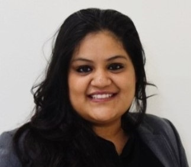

|  |
Komal Agarwal, Ph.DPostdoc, Department of Physics and Technology, University of TromsØ, Norway |
 https://orcid.org/0000-0003-3762-7942
https://orcid.org/0000-0003-3762-7942Year 2020
[J8] W. Zhang, H. Wang, H. Wang, J.Y. En Chan, H. Liu, B. Zhang, Y.-Fang Zhang, K. Agarwal, X. Yang, H. Y. Low, Q. Ge, J. KW Yang, Structural Multi-Colour Invisible Inks with Submicron 4D Printing of Shape Memory Polymers, Nature Communications, 2020.
[J7] K. Agarwal, R. Sahay, A. Baji, A. S. Budiman, Impact Resistant and Tough Helicoidally Aligned Ribbon Reinforced Composite with Tunable Mechanical Properties via Integrated Additive Manufacturing Methodologies, ACS Applied Polymer Materials, 2020.
[J6] R. Sahay*, K. Agarwal*, A. Subramani, N Raghavan, A.S Budiman, A. Baji, Helicoidally Arranged Polyacrylonitrile Fiber-Reinforced Strong and Impact-Resistant Thin Polyvinyl Alcohol Film Enabled by Electrospinning-Based Additive Manufacturing, Polymers, 2020.
[J5] K. Agarwal, R. Sahay, A. Baji, Tensile Properties of Composite Reinforced with Three-Dimensional Printed Fibers, Polymers, 2020. DOI: 10.3390/polym12051089
[J4] A. Baji, K. Agarwal, S. V. Oopath, Emerging Developments in the Use of Electrospun Fibers and Membranes for Protective Clothing Applications, Polymers, 2020. DOI: 10.3390/polym1202049
[Book Chapter] K. Agarwal, R. Sahay, A.S. Budiman, A. Baji, Development of strong and tough electrospun fiber reinforced composites, Electrospun Polymers and Composites - Ultrafine Materials, High Performance Fibres and Wearables,Woodhead Publishing Series in Composites Science and Engineering, 2020. DOI: 10.1016/B978-0-12-819611-3.00009-1
[C7] K. Agarwal, R. Sahay, A. Baji, Use of melt-electrospinning writing to produce tough fiber reinforced composites, MRS-S Conference on Advanced Materials, 2020.
[C6] R. Sahay, K. Agarwal, A. Baji, A. S. Budiman, N. Raghavan, Impact-resistant helicoidally arranged electrospun polyacrylonitrile (PAN) fibers reinforced polyvinyl alcohol (PVA) thin-film, MRS-S Conference on Advanced Materials, 2020.
Year 2019
[J3] K. Agarwal, R. Sahay, A. Baji, A. S. Budiman, Biomimetic tough helicoidally structured material through novel electrospinning based additive manufacturing, MRS Advances, vol. 4, issue. 43, pp. 2345-2354, 2019.
[C5] K. Agarwal, R. Sahay, A. S. Budiman, A. Baji, 3D Helicoidally Architectured Thin-Film Composite for Tougher Bio-Inspired Material, Materials Research Society (MRS) Fall 2019, 2019.
[C4] A. Subramani, K. Agarwal, R. Sahay, A. S. Budiman, Low-Velocity Impact Testing of Damage-Resistant Bio-Mimetic Composite Structures Manufactured with Electrospinning, International Conference on Materials for Advanced Technologies, 2019.
[C3] K. Agarwal, R. Sahay, A. S. Budiman, A. Baji, 3D Biomimetic Thin Film Composite Design for Tougher Material, International Conference on Materials for Advanced Technologies, 2019.
[C2] Komal Agarwal, Rahul Sahay, Avinash Baji, Arief S. Budiman, 3D Architectural Design Enabled by Electrospinning to Fabricate Strong and Tough Fibers, Materials Research Society (MRS) Spring 2019, 2019.
Year 2018
[J2] K. Agarwal, R. Sahay, A. Baji, A. S. Budiman, Biomimetic tough helicoidally structured material through novel electrospinning based additive manufacturing, Advances in Materials Science and Engineering, 2018. DOI: 10.1155/2018/8460751
[C1] K. Agarwal, A. Baji, A. S. Budiman, Biomimetic, Strong yet Tough Composites through Electrospinning as an Additive Manufacturing Methodology, International Reliability and Stress-Related Phenomena(IRSP), 2018.
Year 2017
[J1] N. Thakur, A. S. Ranganath, K. Agarwal, A. Baji, Electrospun Bead-On-String Hierarchical Fibers for Fog Harvesting Application, Macromolecular Materials and Engineering, 2017.